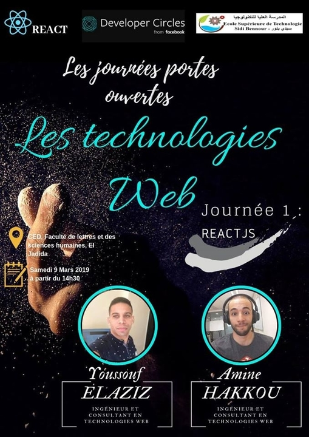
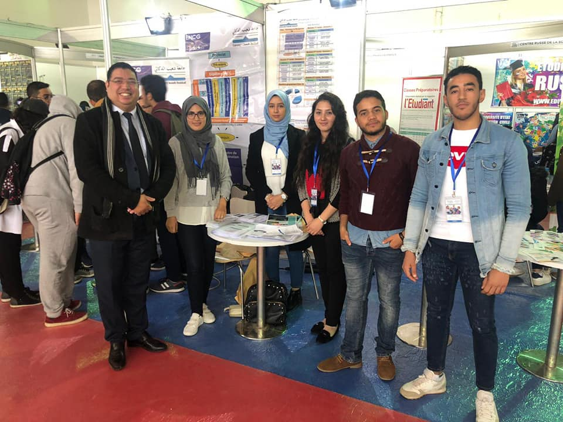
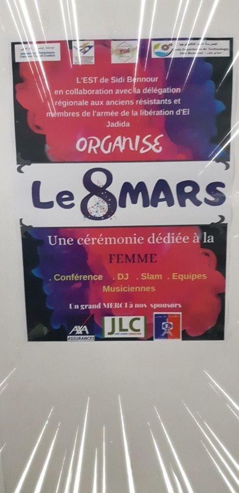
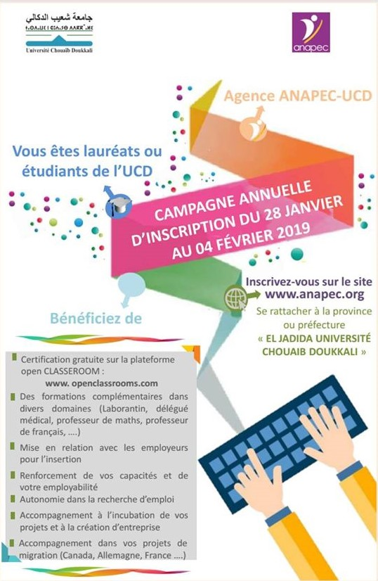
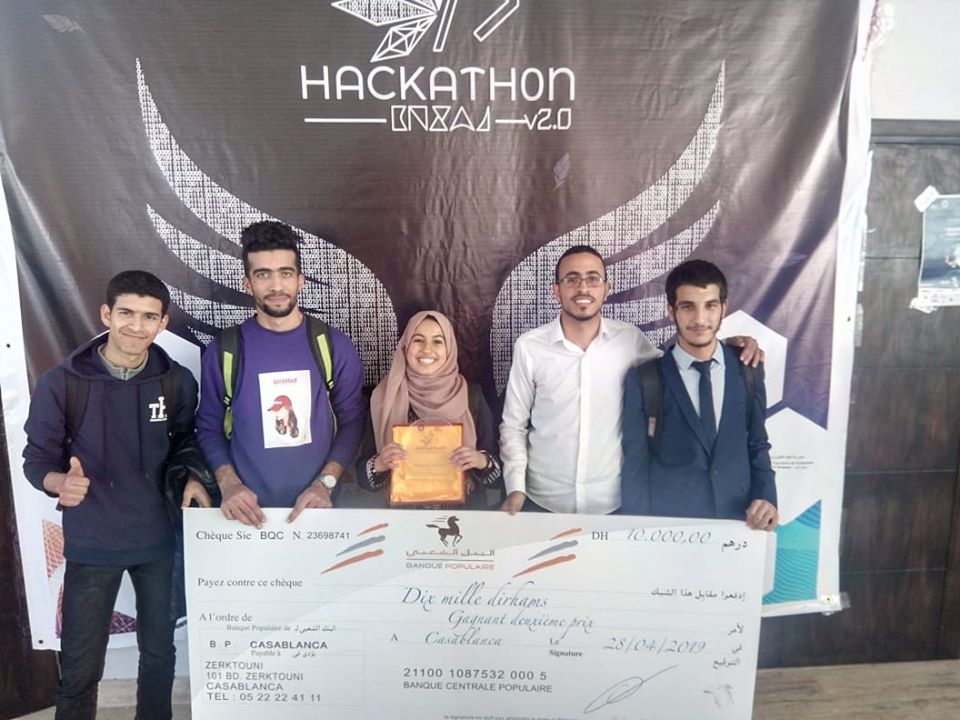
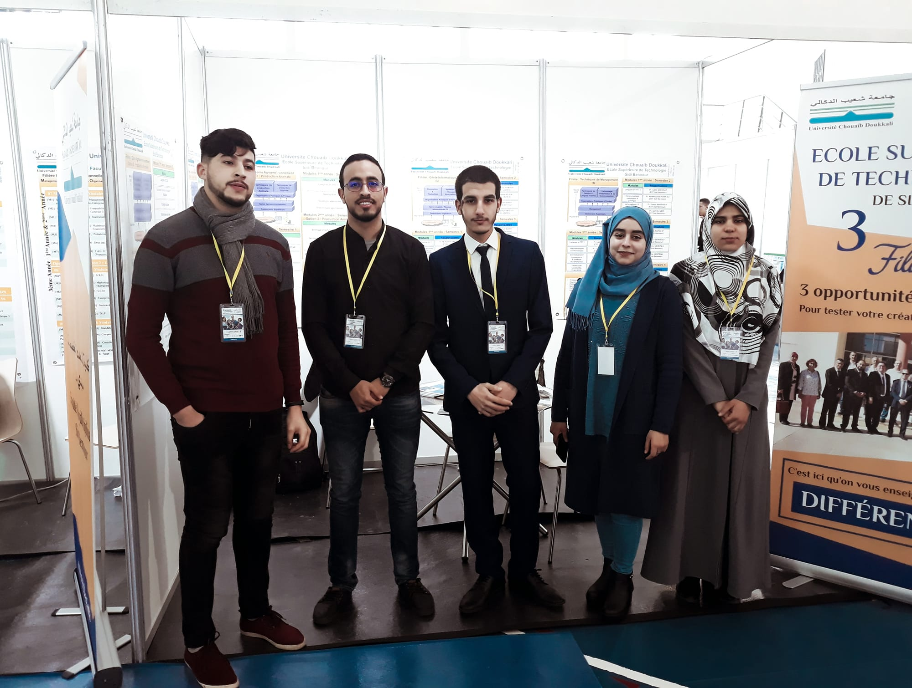
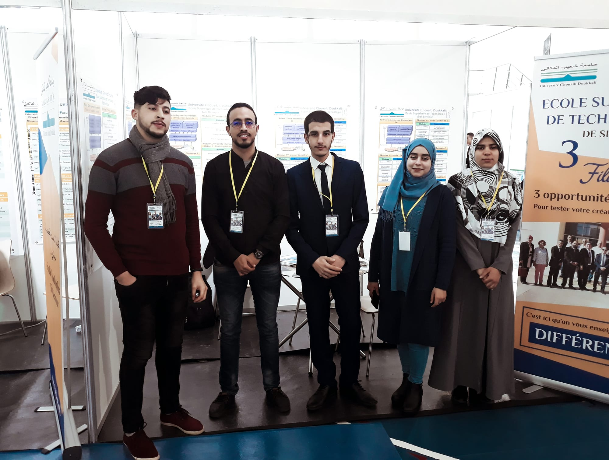
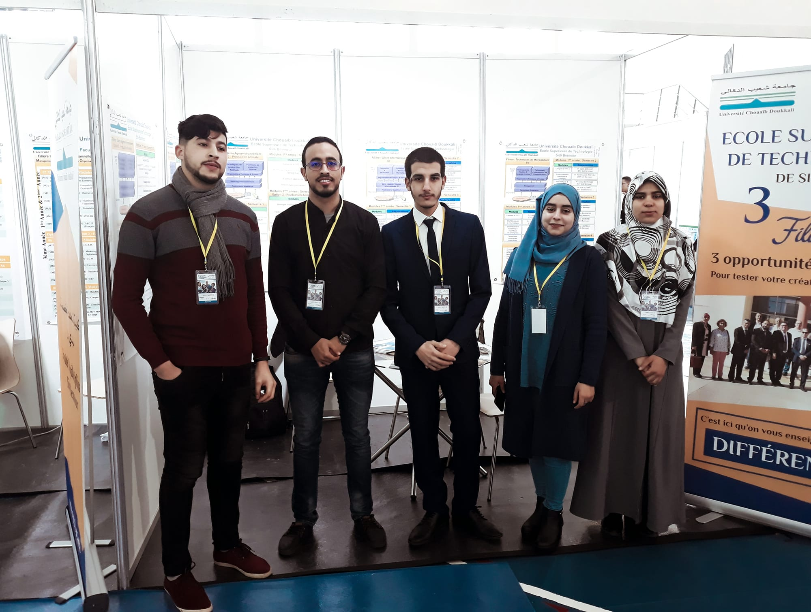
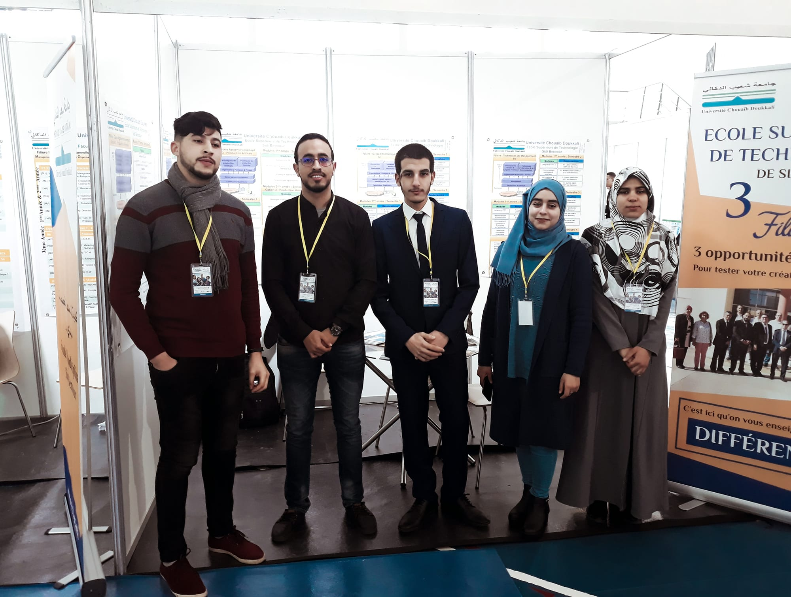

Activités Récentes





 


L’Ecole Supérieure de Technologie Sidi Bennour (ESTSB) est un établissement public d’enseignement supérieur à nalité de formation des Techniciens Supérieurs. Elle a été créée en Août 2016 par le Ministère de l’Enseignement Supérieur, de la Formation des Cadres et de la Recherche Scientifique du Royaume du Maroc. L’ESTSB est une composante de l’Université Chouaib Doukkali d’El Jadida. Sa vocation est de former des Techniciens Supérieurs polyvalents, hautement qualifiés et immédiatement opérationnels après leur sortie de l’Ecole en tant que collaborateurs d’ingénieurs et de managers. Sont admis à l’ESTSB, les bacheliers de l’enseignement secondaire technique, scientifique et tertiaire. L’admission à l’Ecole (au de Diplôme Universitaire de Technologie « DUT ») se fait par voie de sélection par ordre de mérite après une présélection sur la base des notes obtenues au baccalauréat. Les candidats doivent être âgés de 22 ans au plus au 31 Décembre de l’année du concours et doivent déposer leurs dossiers de pré-inscription avant le 30 Juin de chaque année universitaire.
Administration de Systèmes et de Réseaux (ASR) :
La répartition et le partage des ressources matérielles, logicielles et informationnelles dans les systèmes et réseaux ont conduit à une évolution de certains métiers de l’informatique et à l’émergence de nouveaux métiers. Parmi ces derniers, figurent ceux qui prennent en charge l’ensemble des tâches relatives à l’administration et à la gestion d’un parc informatique (organisé ou à organiser) en réseau.
Les compétences visées dans cette option s’inscrivent dans ce cadre et correspondent, au niveau technique, à l’exercice de fonctions d’interface entre les utilisateurs, les fournisseurs d’équipements matériels et logiciels ou prestataires externes, les gestionnaires et les décideurs.
Ces compétences sont principalement :
– le choix et l’installation des équipements matériels et logiciels relatifs à l’interconnexion au niveau d’un site ou entre sites distants
– le choix, la mise en œuvre et le test de l’électronique active utilisée dans les différents équipements
– le choix et la mise en œuvre de configurations de type client/serveur
– l’administration d’un réseau local ou étendu
– l’administration d’un ou plusieurs systèmes de bases de données d’entreprise
Former des techniciens supérieurs en techniques de management qui disposent de connaissances et de compétences appréciables relative aux organisations, privées et publiques.
Débouchés potentiels :
– Intégrer l’entreprise privée et publique
– Création d’entreprise
– Fonction publique
– Gestionnaire
– Technicien en informatique de gestion
Conditions d’accès :
– Accès sur étude de dossier
– Baccalauréats Scientifiques et Techniques
Options :
– Comptabilité en Normes Françaises et Internationales.
– Gestion des banques et assurances
– Gestion des Ressources Humaines.
Le DUT agronomie est précisément le DUT génie biologique option agronomie ou DUT GB agro. En effet le DUT génie biologique peut proposer les options agronomie, analyse biologique et biochimique et industrie alimentaire et biologique. Il s’agit d’un diplôme d’État de niveau bac+2 accessible directement après le bac.
Au sein de ce cursus d’une durée de deux ans, les étudiants apprennent les techniques d’amélioration des conditions de production agricole pour travailler dans le domaine de la qualité ou du commerce. Cette formation professionnalisante est disponible dans les Instituts Universitaires de Technologie et peut être suivie en alternance si les étudiants souhaitent acquérir de l’expérience rapidement via un contrat de professionnalisation ou un contrat d’apprentissage.

Les professeurs

Enseignant Chercheur chez Université Chouaïb Doukkali El Jadida

Ph. D. Student at the ENSIAS School, Mohammed V University of Rabat, Morocco

Enseignant chercheur chez EST Sidi Bennour

Professeur Assistant | Consultant | formateur | Keynote Speaker

Professeur de l’Enseignement Supérieur Assistant

Professeur chez Université Chouaïb Doukkali El Jadida

Professeur chez Université Chouaïb Doukkali El Jadida
Permet d'entrer en contact. Envoie-nous un message
avenue Jabran Khalil، El Jadida 24000
Phone: (+212) 05 23 34 44 48
FAX: (+212) 05 23 34 44 49
Email: mail@mail.com